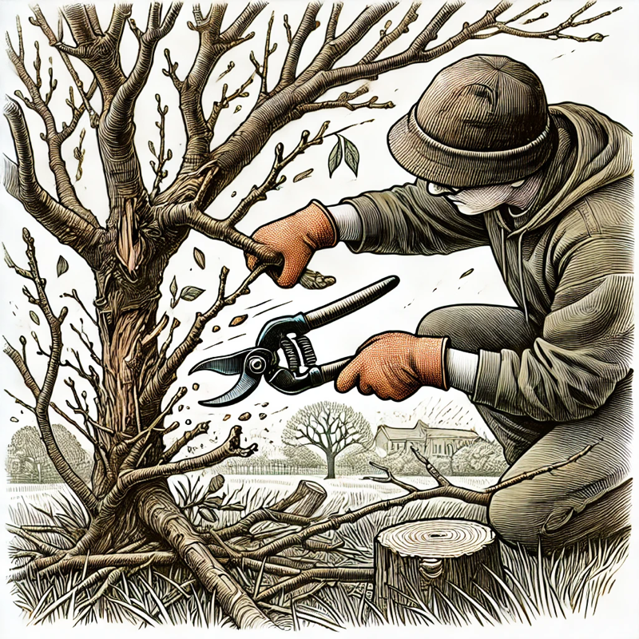
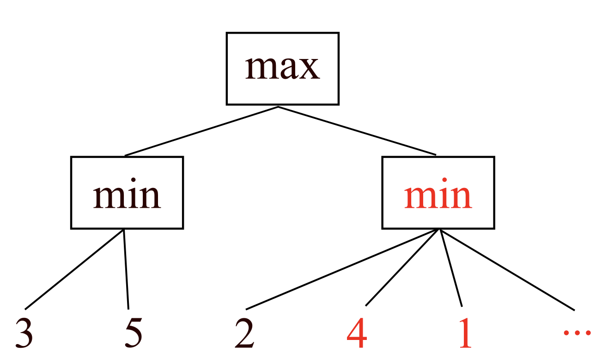

CS 463G & CS 663
(Intro to) AI
Lecture 10: Alpha-Beta Pruning
Fall 2026
Alpha-beta pruning avoids branches that cannot affect the final minimax decision.
It changes the amount of work, not the optimal move.

Can we get the minimax decision without evaluating every node?
If Max already has a move worth v, Max will not choose a branch that can only become worse than v.
If Min already has a move worth w, Min will not allow a branch that can only become better for Max.
Once a branch cannot change the ancestor’s decision, stop searching it.

Alpha-beta pruning tree
The right Min branch can be pruned once it produces a value lower than Max’s already available option.
| Symbol | Meaning |
|---|---|
| \alpha | Best value Max can guarantee so far along the current path |
| \beta | Best value Min can guarantee so far along the current path |
Prune when \alpha \ge \beta.
At a Max node, update \alpha; prune as soon as \alpha \ge \beta.
At a Min node, update \beta; the same prune test \alpha \ge \beta applies.
Real games are often too large to search to terminal states.
| Technique | Idea |
|---|---|
| Cutoff search | Stop at a fixed depth or time limit |
| Evaluation function | Estimate utility of a non-terminal state |
| Heuristics | Use domain knowledge to evaluate promising states |
Alpha-beta pruning is safe; forward pruning is a heuristic compromise.
Why is this useful when a game engine has a strict time limit?
Better move ordering does not change the answer, but it can dramatically change runtime.
Cut off when the evaluation is meaningful, not merely when the depth counter says stop.